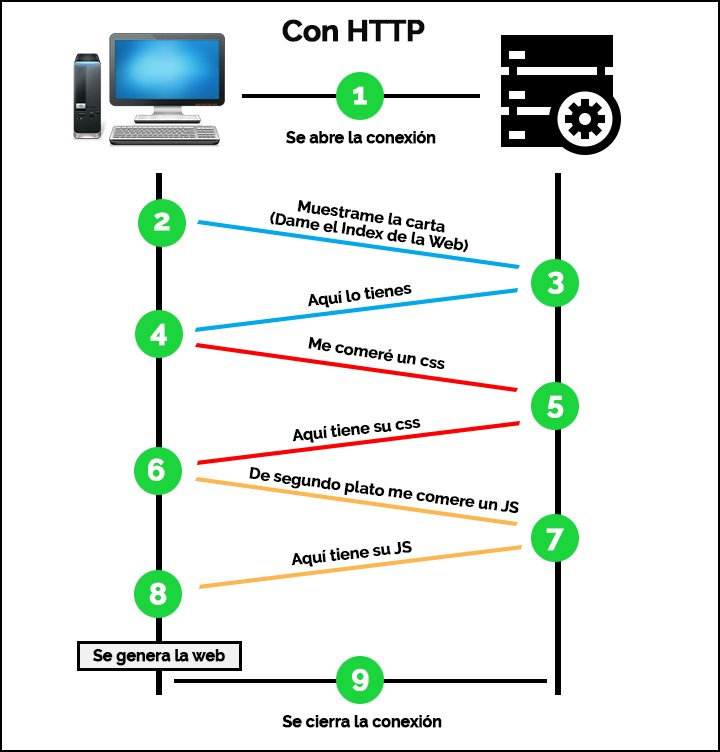
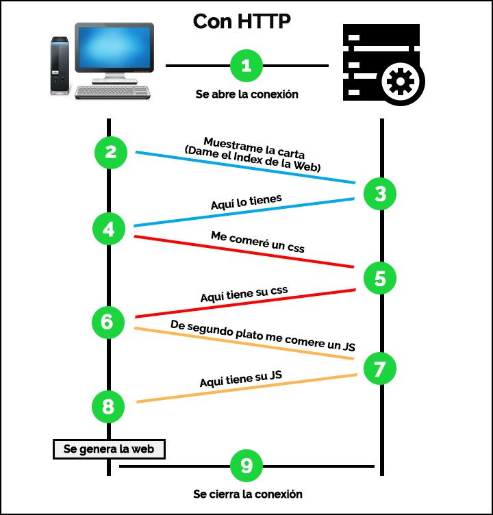

Herramientas y recursos
- ¿Sobre que protocolo binario está montado el protocolo HTTP?
Está montado sobre TCP (HTTP 1y2) y UDP (3). Se establece entre el host cliente (port
alto) y el host servidor (socket remoto abierto en modalidad pasiva) una conexión TCP
producida después de un handshaking de 3 vías (solicitud, aceptación y confirmación de
conexión).
- ¿Cuáles son los clientes http y los servidores http mas utilizados?
Un cliente HTTP es cualquier software que realiza peticiones HTTP a un servidor
(navegadores web como Chrome, mozilla, safari, Microsoft Edge y opera).
Un servidor HTTP es un software que escucha y responde a las solicitudes HTTP de los
clientes. Son utilizados Apache HTTP Server, Nginx, LiteSpeed y Caddy.
HTTP en imágenes
 
